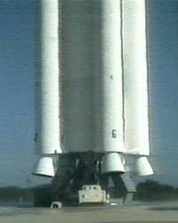

First part of international space station launched
Category: Social News, Tech News, international Space Station, Space
Originally published on 20 Nov 1998. Most recent update: 20 Nov 1998.
This morning the first component of the International Space Station, a control module with the poetic name Zarya, was put into space by a Russian Proton rocket. The Proton rocket weighs one and a half million pounds and generates more than 2 and a half million pounds of thrust from its three stages during the 9 minute, 47 second-ride from launch pad to spacecraft separation. The separation proceeded without problems. The Zarya Control Module will provide the initial propulsion, orientation capability and commanding for the fledgling station.
Zarya's initial orbital altitude will be about 220 by 115 statute miles. The altitude will be circularized next week following a series of manoeuvring system engine firings, placing Zarya in the proper orbit for the arrival of the shuttle Endeavour almost three weeks from now, carrying the Unity connecting module, or node. Zarya will be grappled by Endeavour astronaut Nancy Currie through the use of the shuttle's robot arm during the first assembly mission, STS-88, and will be mated to Unity, setting the stage for three spacewalks by Jerry Ross and Jim Newman to connect cables and install equipment for future Station construction flights.
The space station is a collaborative project of sixteen countries, led by the United States and will cost at least 50 billion US $. NASA hailed the successful launch as the opening of a new era in space travel and science. The US agency emphasizes the international cooperation and its accompanying "overcoming barriers of language, culture and technical differences". In reality, however, American capital, science and engineering will likely dominate. The Russian scientists, for example, are too poor to buy substantial research time. As this week's Science reports, they have sold thousands of hours to NASA to be able to build a station component costing 60 million US $.

Launching the first component. Photo: Australian Broadcasting Corporation